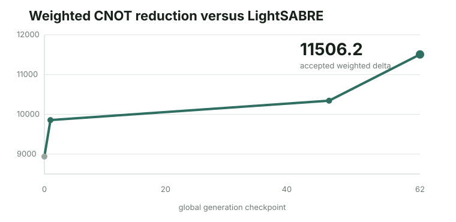
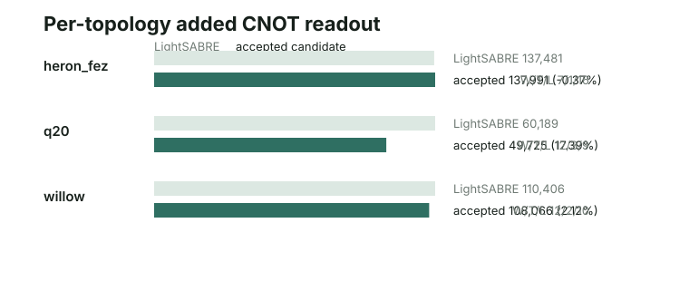
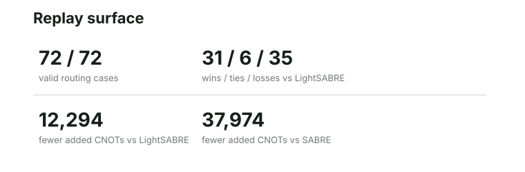

Abstract
This note reports a deterministic qubit-routing policy, a public scoring trace, and an exact replay candidate for a frozen swap-reduction benchmark. The accepted policy reduces added CNOTs by 12,294 versus LightSABRE while keeping the routing-policy surface and topology split visible.
The claim is deliberately bounded: it is not a universal quantum compiler result, not a runtime benchmark, and not a hardware-performance claim.
1. Problem formulation
The two-qubit gate that matters in this benchmark is the CNOT. A CNOT flips the target qubit only when the control qubit is 1; together with arbitrary one-qubit gates, CNOT is a standard building block for universal quantum circuits. Hardware routing matters because a SWAP between adjacent physical qubits is normally decomposed into three CNOTs, so every extra SWAP directly inflates the added-CNOT readout.
Qubit routing maps a logical circuit onto a physical device topology. When two logical qubits that need a two-qubit gate are not adjacent on the target topology, the router inserts SWAPs. Those SWAPs increase the compiled circuit cost; in this public benchmark the observable readout is added CNOT count.
The optimization lever is intentionally narrow: the policy still inserts swaps to satisfy adjacency, but it can avoid paying a restore swap when the resulting logical-to-physical permutation is useful for the next routed interaction.
2. Evaluation contract
The evaluator compares the candidate against LightSABRE on 24 circuits crossed with three topology targets: Q20, Willow, and Heron-FEZ. In this report those names identify frozen coupling graphs: the physical adjacency constraint on which each logical two-qubit interaction must be routed.
| Target | Topology type | Circuits | Role in this report |
|---|---|---|---|
| Q20 | Small 20-qubit coupling graph. | 24 | Checks routing pressure when physical room is limited. |
| Willow | Large sparse device-style coupling graph. | 24 | Checks layout and lookahead on a wider target. |
| Heron-FEZ | Large sparse device-style coupling graph in a different family. | 24 | Checks transfer across a separate adjacency family. |
For candidate policy \(p\), the governed score is:
Here \(A_p(c,\tau)\) is the added-CNOT count for policy \(p\) on circuit \(c\) and topology \(\tau\), \(A_{\mathrm{LS}}\) is the LightSABRE reference, and \(w_{c,\tau}\) is the public case weight. Lower \(J(p)\) is better; the result plots \(-J(p)\) so that positive weighted CNOT reduction reads upward.
3. Accepted candidate
The accepted candidate is a Rust routing-policy implementation. It combines a topology-aware initial layout with a SABRE-style swap scorer, while keeping front-layer distance, extended-set lookahead, and decay behavior visible in one deterministic policy surface.
1pub struct CandidatePolicy {2 pub basic_weight: f64,3 pub lookahead_weight: f64,4 pub lookahead_size: usize,5 pub set_scaling: SetScaling,6 pub use_decay: bool,7 pub decay_increment: f64,8 pub decay_reset: usize,9 pub tie_break_weight: f64,10 pub lookahead_scaling: f64,11 pub current_iteration: usize,12}13 14impl Default for CandidatePolicy {15 fn default() -> Self {16 // Conservative tuning for routing-portfolio shapes: decay enabled to smooth noise.17 Self {18 basic_weight: 1.0,19 lookahead_weight: 1.4, // Slightly higher lookahead for better pathfinding20 lookahead_size: 20,21 set_scaling: SetScaling::Size,22 use_decay: true,23 decay_increment: 0.04, // Smoother decay24 decay_reset: 15,25 tie_break_weight: 0.12, // Explicitly favors distance-reducing swaps26 lookahead_scaling: 1.2,27 current_iteration: 0,28 }29 }30}31 32impl Policy for CandidatePolicy {33 fn choose_best_initial_layout(34 &mut self,35 ctx: &InitialLayoutContext<'_> ,36 _rng: &mut RngState,37 ) -> Result<Vec<usize>, RouterError> {38 choose_disjoint_aware_layout(ctx)39 }40 41 fn choose_best_swap(42 &mut self,43 ctx: &SwapSelectionContext<'_> ,44 rng: &mut RngState,45 ) -> Option<(usize, usize)> {46 self.current_iteration += 1;47 let front_layer = FrontLayerScores::from_ctx(ctx);48 let candidates = enumerate_candidate_swaps(ctx.topology(), &front_layer);49 if candidates.is_empty() {50 return None;51 }52 53 let current_lookahead = self.compute_dynamic_lookahead(front_layer.len());54 let extended_set = build_extended_set(ctx, current_lookahead);55 56 let scale = |weight: f64, size: usize, scaling: SetScaling| -> f64 {57 match scaling {58 SetScaling::Constant => weight,59 SetScaling::Size => {60 if size == 0 {61 0.062 } else {63 weight / (size as f64)64 }65 }66 }67 };68 69 let basic_weight = scale(self.basic_weight, front_layer.len(), self.set_scaling);70 let lookahead_weight = scale(71 self.lookahead_weight * self.lookahead_scaling,72 extended_set.len(),73 self.set_scaling,74 );75 76 // Pre-filter swaps that have zero delta on the front layer.77 // These swaps will not improve the front layer score and should78 // be evaluated purely on the extended set (lookahead).79 let candidates: Vec<(usize, usize)> = candidates80 .into_iter()81 .filter(|swap| {82 let d = front_layer.score_delta(*swap, ctx.topology());83 // Keep swaps that have ANY effect on the front layer84 d.abs() > 1e-985 })86 .collect();87 88 let mut swap_scores = candidates89 .iter()90 .copied()91 .map(|swap| (swap, 0.0))92 .collect::<Vec<_>>();93 94 // Absolute score is constant regardless of the swap chosen,95 // so it can be computed once.96 let mut absolute_score = basic_weight * front_layer.total_score(ctx.topology());97 98 for (swap, score) in &mut swap_scores {99 *score += basic_weight * front_layer.score_delta(*swap, ctx.topology());100 }101 102 if !extended_set.is_empty() && self.lookahead_weight != 0.0 {103 absolute_score += lookahead_weight * extended_set.total_score(ctx.topology());104 for (swap, score) in &mut swap_scores {105 *score += lookahead_weight * extended_set.score_delta(*swap, ctx.topology());106 }107 }108 109 // Apply decay to the absolute score (constant across candidates) to prioritize110 // early iterations or reset after decay_reset iterations.111 let decay = self.apply_decay();The accepted candidate changes routing-policy logic inside the fixed benchmark scaffold. The portfolio assets, topology targets, reference LightSABRE comparison, and replay validator remain unchanged.
4. Results
The accepted replay reduced aggregate added CNOT count from LightSABRE's 308,076 to 295,782 across the 72-case portfolio. The aggregate reduction is 12,294 added CNOTs, and the case split is 31 wins, 6 ties, and 35 losses versus LightSABRE.
| Metric | Baseline | Accepted | Change |
|---|---|---|---|
| Weighted CNOT reduction | 8,938.8 | 11,506.2 | +2,567.4 |
| Aggregate added CNOTs | 308,076 | 295,782 | 12,294 fewer |
| Case outcome | reference | 31 / 6 / 35 | wins / ties / losses |

The result is not uniform across topology families. Q20 carries the largest positive readout, Willow is modestly positive, and Heron-FEZ is slightly worse than LightSABRE on aggregate. The public result keeps that split visible instead of compressing it into only the all-portfolio score.

The selected case-level readout highlights the largest positive exported case savings. These rows are sorted by absolute CNOT reduction versus LightSABRE and are not a second aggregate readout.

See metrics.json, replay.json, and score-trace.json.
5. Limitations
This report is limited to the frozen 24-circuit LightSABRE portfolio in the bundle. It does not claim improvement on arbitrary circuits, arbitrary hardware topologies, all related benchmark assets, or production compiler workloads.
The benchmark measures routing quality through added CNOT count. It does not make a wall-clock speed claim, does not measure hardware execution fidelity, and does not evaluate downstream transpiler passes after routing.
6. Reproducibility
The public bundle includes the accepted Rust candidate, the evaluation contract, metrics, a curated evolution chain, replay confirmation, public figures, and a curated animated replay at the run page. The replay excludes prompts, raw telemetry, local logs, private paths, and operational run state.
Replaying the result should use the same 24-circuit LightSABRE portfolio, the same Q20, Willow, and Heron-FEZ coupling graphs, the same added-CNOT objective, the same case weights, and the same lower-is-better governed score. Changing the topology set, case set, routing objective, or LightSABRE reference creates a new evaluation, not a replay of this result.
Under that replay contract, the accepted Rust candidate reproduces 295,782 aggregate added CNOTs, 12,294 fewer than the LightSABRE reference, with a 31 / 6 / 35 win/tie/loss case split.
The source bundle is available in the Göther Labs results repository.